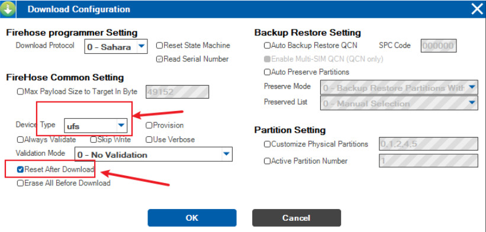
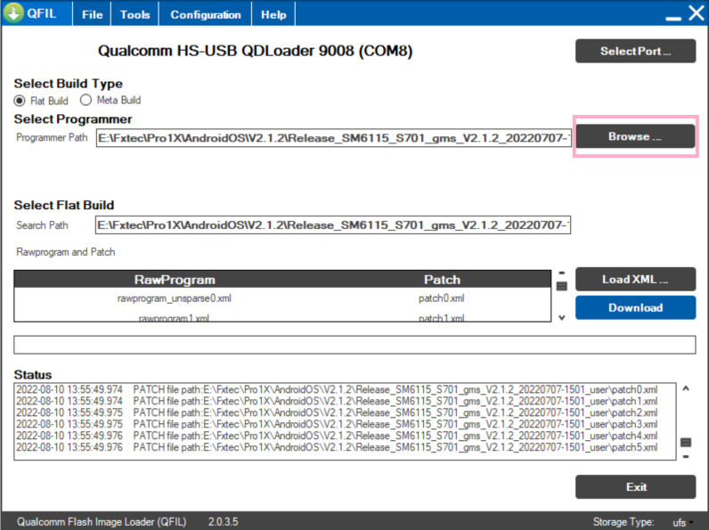
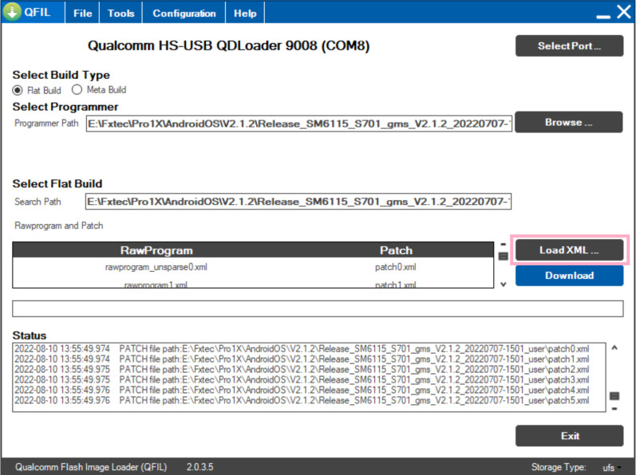
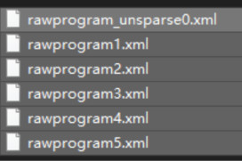
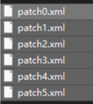
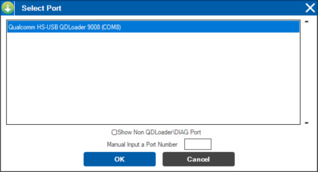
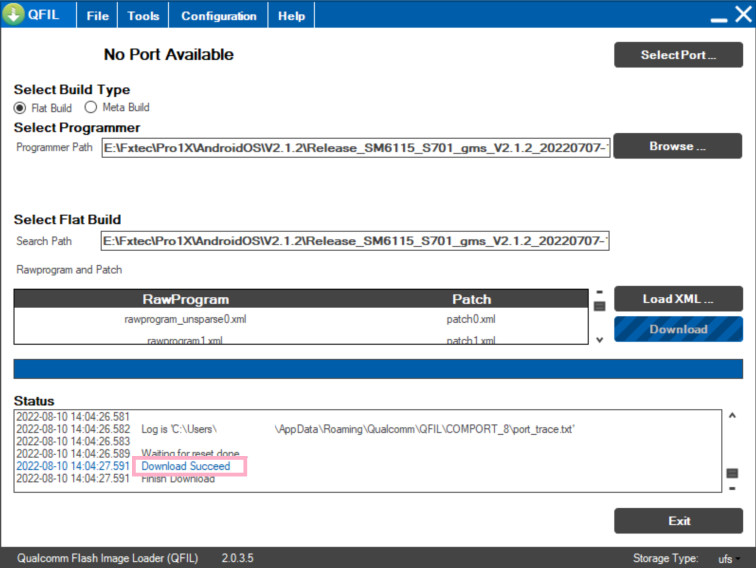
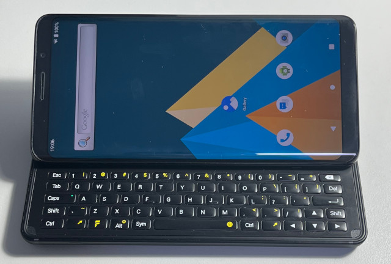

Steward
分享是一種喜悅、更是一種幸福
手機 - F(x)tec Pro1 X - Android - 安裝系統(使用QFIL)
參考資料：
https://drive.google.com/drive/folders/1h0NqcNvkcX0nV5V3VVie4-smEm5ijW36
https://drive.google.com/file/d/19nbvcRdtlsdm7nR1y_Xe3ZfpT2Jj4hSH/view?usp=share_link
https://community.fxtec.com/topic/3670-pro1x-stock-android-non-gms-build/?tab=comments#comment-63768
步驟如下：
1. 由於目前的驅動程式沒有數位簽章，因此，必須先停止數位簽章檢查(https://steward-fu.github.io/website/driver/wdm_stop_win10_sign.htm)
2. 安裝Qualcomm_USB_Driver_V1.0.exe
3. 安裝QPST.2.7.496.1.exe
4. 手機關機
5. 同時按下Vol+和Vol-，接著連接USB到電腦，進入EDL燒入模式
6. 開啟QFIL並且選擇如下Configuration

7. 選擇Flat Build
8. 選擇prog_firehose_ddr.elf

9. 載入XML

10. 選擇全部XML

11. 選擇全部Patch XML

12. 選擇Select Port...，選擇電腦抓到的COM Port

13. 按下Download按鈕，就可以開始燒錄，如果沒有燒錄動作，只要重新進入EDL模式就可以再次燒錄

完成
